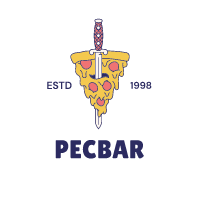

<nav class="navbar navbar-expand-lg navbar-light">
  <div class="container-fluid">
    
    <button class="navbar-toggler" type="button" data-bs-toggle="collapse" data-bs-target="#navbarNav" aria-controls="navbarNav" aria-expanded="false" aria-label="Toggle navigation">
      <span class="navbar-toggler-icon"></span>
    </button>
    <div class="collapse navbar-collapse" id="navbarNav">
      <ul class="navbar-nav ms-auto">
        <li class="nav-item">
          <a class="nav-link active" routerLink="" routerLinkActive="active-link" [routerLinkActiveOptions]="{exact: true}">Home</a>
        </li>
        <li class="nav-item">
          <a class="nav-link" routerLink="menu" routerLinkActive="active-link" *ngIf="isLoggedIn()">Menu</a>
        </li>
        <li class="nav-item">
          <a class="nav-link" routerLink="juegos" routerLinkActive="active-link" *ngIf="isLoggedIn()">Juegos</a>
        </li>
        <li class="nav-item">
          <a class="nav-link" routerLink="formulario" routerLinkActive="active-link" *ngIf="isLoggedIn()">Reserva</a>
        </li>
        <!-- <li class="nav-item">
          <a class="nav-link" routerLink="contact" routerLinkActive="active-link" *ngIf="isLoggedIn()">Contacto</a>
        </li> -->
        <li class="nav-item">
          <a class="nav-link" routerLink="iniciosesion" routerLinkActive="active-link" *ngIf="!isLoggedIn()">Iniciar Sesión</a>
          <a class="nav-link" (click)="cerrarSesion()" *ngIf="isLoggedIn()">Cerrar Sesión</a>
          <a class="nav-link"  routerLink="contact"  *ngIf="isLoggedIn()">Mi perfil</a>
        </li>
      </ul>
    </div>
  </div>
</nav>
